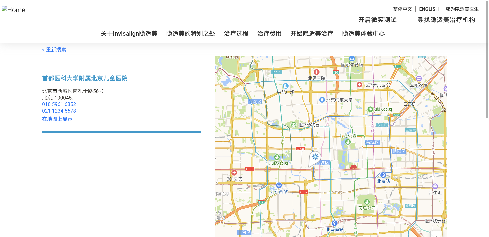

Total：13
Success：11
Failure：0
Error：2
Skipped：0
StartTime：2022-07-02 14:09:24
Duration：221s
| CaseName | Description | StartTime | Duration | Status | Open/Close |
|---|---|---|---|---|---|
| action | success:1 | failure:0 | error:2 | skipped:0 | Open | |||
| search_action01 | 搜索case-1 | 2022-07-02 14:09:24 | 15s | error | Open |
Steps8.82 | - call CommonTest() 5.82 | - openUrl('https://www.invisalign.com.cn/find-a-doctor')
3.01 | - sleep(3) 0.14 | - check('id=amap-city-input')
0.29 | - click('id=amap-city-input')
0.85 | - sendKeys('name=location', ${keywords})
1.79 | - ${element_id} = $.getElement('id=amap-sug0')
Traceback (most recent call last):
File "/Library/Frameworks/Python.framework/Versions/3.10/lib/python3.10/site-packages/fasttest-1.0.1-py3.10.egg/fasttest/runner/run_case.py", line 21, in testCase
case.iteration(self.steps)
File "/Library/Frameworks/Python.framework/Versions/3.10/lib/python3.10/site-packages/fasttest-1.0.1-py3.10.egg/fasttest/runner/case_analysis.py", line 29, in iteration
self.case_executor(step, style, common, iterating_var)
File "/Library/Frameworks/Python.framework/Versions/3.10/lib/python3.10/site-packages/fasttest-1.0.1-py3.10.egg/fasttest/runner/case_analysis.py", line 111, in case_executor
result = self.action_nalysis.action_analysis(step, style, common, iterating_var)
File "/Library/Frameworks/Python.framework/Versions/3.10/lib/python3.10/site-packages/fasttest-1.0.1-py3.10.egg/fasttest/runner/action_analysis.py", line 301, in action_analysis
result = self.executor_keywords(action_dict, style)
File "/Library/Frameworks/Python.framework/Versions/3.10/lib/python3.10/site-packages/fasttest-1.0.1-py3.10.egg/fasttest/common/decorator.py", line 116, in wrapper
raise exception
File "/Library/Frameworks/Python.framework/Versions/3.10/lib/python3.10/site-packages/fasttest-1.0.1-py3.10.egg/fasttest/common/decorator.py", line 70, in wrapper
result = func(*args, **kwds)
File "/Library/Frameworks/Python.framework/Versions/3.10/lib/python3.10/site-packages/fasttest-1.0.1-py3.10.egg/fasttest/runner/action_analysis.py", line 279, in executor_keywords
raise e
File "/Library/Frameworks/Python.framework/Versions/3.10/lib/python3.10/site-packages/fasttest-1.0.1-py3.10.egg/fasttest/runner/action_analysis.py", line 268, in executor_keywords
result = self.action_executor._action_executor(action)
File "/Library/Frameworks/Python.framework/Versions/3.10/lib/python3.10/site-packages/fasttest-1.0.1-py3.10.egg/fasttest/runner/action_executor_base.py", line 245, in _action_executor
result = func(action)
File "/Library/Frameworks/Python.framework/Versions/3.10/lib/python3.10/site-packages/fasttest-1.0.1-py3.10.egg/fasttest/runner/action_executor_base.py", line 230, in _variable
raise e
File "/Library/Frameworks/Python.framework/Versions/3.10/lib/python3.10/site-packages/fasttest-1.0.1-py3.10.egg/fasttest/runner/action_executor_base.py", line 222, in _variable
result = func_(action)
File "/Library/Frameworks/Python.framework/Versions/3.10/lib/python3.10/site-packages/fasttest-1.0.1-py3.10.egg/fasttest/runner/action_executor_web.py", line 542, in _getElement
element = DriverBaseWeb.get_element(key, value, Var.time_out)
File "/Library/Frameworks/Python.framework/Versions/3.10/lib/python3.10/site-packages/fasttest-1.0.1-py3.10.egg/fasttest/drivers/driver_base_web.py", line 642, in get_element
raise e
File "/Library/Frameworks/Python.framework/Versions/3.10/lib/python3.10/site-packages/fasttest-1.0.1-py3.10.egg/fasttest/drivers/driver_base_web.py", line 630, in get_element
if element.is_enabled():
File "/Library/Frameworks/Python.framework/Versions/3.10/lib/python3.10/site-packages/selenium/webdriver/remote/webelement.py", line 169, in is_enabled
return self._execute(Command.IS_ELEMENT_ENABLED)['value']
File "/Library/Frameworks/Python.framework/Versions/3.10/lib/python3.10/site-packages/selenium/webdriver/remote/webelement.py", line 740, in _execute
return self._parent.execute(command, params)
File "/Library/Frameworks/Python.framework/Versions/3.10/lib/python3.10/site-packages/selenium/webdriver/remote/webdriver.py", line 430, in execute
self.error_handler.check_response(response)
File "/Library/Frameworks/Python.framework/Versions/3.10/lib/python3.10/site-packages/selenium/webdriver/remote/errorhandler.py", line 247, in check_response
raise exception_class(message, screen, stacktrace)
selenium.common.exceptions.StaleElementReferenceException: Message: stale element reference: element is not attached to the page document
(Session info: chrome=103.0.5060.53)
Stacktrace:
0 chromedriver 0x00000001029e8079 chromedriver + 4444281
1 chromedriver 0x0000000102974403 chromedriver + 3970051
2 chromedriver 0x000000010260f038 chromedriver + 409656
3 chromedriver 0x0000000102611ee7 chromedriver + 421607
4 chromedriver 0x0000000102611d86 chromedriver + 421254
5 chromedriver 0x000000010261204c chromedriver + 421964
6 chromedriver 0x00000001026404c5 chromedriver + 611525
7 chromedriver 0x0000000102662792 chromedriver + 751506
8 chromedriver 0x0000000102639f65 chromedriver + 585573
9 chromedriver 0x000000010266289e chromedriver + 751774
10 chromedriver 0x0000000102675221 chromedriver + 827937
11 chromedriver 0x0000000102662683 chromedriver + 751235
12 chromedriver 0x0000000102638a45 chromedriver + 580165
13 chromedriver 0x0000000102639a95 chromedriver + 584341
14 chromedriver 0x00000001029b955d chromedriver + 4253021
15 chromedriver 0x00000001029be3a1 chromedriver + 4273057
16 chromedriver 0x00000001029c316f chromedriver + 4292975
17 chromedriver 0x00000001029bedea chromedriver + 4275690
18 chromedriver 0x000000010299854f chromedriver + 4117839
19 chromedriver 0x00000001029d8ed8 chromedriver + 4382424
20 chromedriver 0x00000001029d905f chromedriver + 4382815
21 chromedriver 0x00000001029ef8d5 chromedriver + 4475093
22 libsystem_pthread.dylib 0x00007fff204268fc _pthread_start + 224
23 libsystem_pthread.dylib 0x00007fff20422443 thread_start + 15
|
|||||
| search_action02 | 搜索case-2 | 2022-07-02 14:09:40 | 25s | error | Open |
Steps8.69 | - call CommonTest() 5.68 | - openUrl('https://www.invisalign.com.cn/find-a-doctor')
3.01 | - sleep(3) 0.13 | - check('id=amap-city-input')
0.61 | - click('id=amap-city-input')
1.23 | - sendKeys('name=location', ${keywords})
0.65 | - click('class=dl-white')
0.02 | - ${element_name} = $.getElement('name=practicename') --> {selenium.webdriver.remote.webelement.WebElement (session="d3e264909ef542f593fe293c0cba2229", element="6146d216-fdc9-403c-9af3-18bbd9193280")}
0.02 | - ${attribute} = $.getAttribute(${element_name}, 'placeholder') --> 诊所
0.00 | - assert '诊所' == "诊所" 0.01 | - ${element_name} = $.getElement('name=radius') --> {selenium.webdriver.remote.webelement.WebElement (session="d3e264909ef542f593fe293c0cba2229", element="c7ab08dd-ffd1-46fe-8711-5459fce7e5f2")}
0.01 | - ${attribute} = $.getAttribute(${element_name}, 'value') --> 10
0.00 | - assert '10' in "10" 0.19 | - sendKeys('name=practicename', '儿童')
0.17 | - ${element_name} = $.getElement('name=radius') --> {selenium.webdriver.remote.webelement.WebElement (session="d3e264909ef542f593fe293c0cba2229", element="c7ab08dd-ffd1-46fe-8711-5459fce7e5f2")}
0.02 | - ${tag} = $.getTagName(${element_name}) --> select
0.31 | - click('xpath=//*[@id="__next"]/div[2]/div/div/div/div[1]/div/div/div[2]/div/div/div/div[2]/div/div/div[3]/div/label/span')
0.10 | - click('xpath=//*[@id="__next"]/div[2]/div/div/div/div[1]/div/div/div[2]/div/div/div/p/a')
3.01 | - sleep(3) 7.56 | - ${element_class} = $.getElement('class=col-8')

Traceback (most recent call last):
File "/Library/Frameworks/Python.framework/Versions/3.10/lib/python3.10/site-packages/fasttest-1.0.1-py3.10.egg/fasttest/runner/run_case.py", line 21, in testCase
case.iteration(self.steps)
File "/Library/Frameworks/Python.framework/Versions/3.10/lib/python3.10/site-packages/fasttest-1.0.1-py3.10.egg/fasttest/runner/case_analysis.py", line 29, in iteration
self.case_executor(step, style, common, iterating_var)
File "/Library/Frameworks/Python.framework/Versions/3.10/lib/python3.10/site-packages/fasttest-1.0.1-py3.10.egg/fasttest/runner/case_analysis.py", line 111, in case_executor
result = self.action_nalysis.action_analysis(step, style, common, iterating_var)
File "/Library/Frameworks/Python.framework/Versions/3.10/lib/python3.10/site-packages/fasttest-1.0.1-py3.10.egg/fasttest/runner/action_analysis.py", line 301, in action_analysis
result = self.executor_keywords(action_dict, style)
File "/Library/Frameworks/Python.framework/Versions/3.10/lib/python3.10/site-packages/fasttest-1.0.1-py3.10.egg/fasttest/common/decorator.py", line 116, in wrapper
raise exception
File "/Library/Frameworks/Python.framework/Versions/3.10/lib/python3.10/site-packages/fasttest-1.0.1-py3.10.egg/fasttest/common/decorator.py", line 70, in wrapper
result = func(*args, **kwds)
File "/Library/Frameworks/Python.framework/Versions/3.10/lib/python3.10/site-packages/fasttest-1.0.1-py3.10.egg/fasttest/runner/action_analysis.py", line 279, in executor_keywords
raise e
File "/Library/Frameworks/Python.framework/Versions/3.10/lib/python3.10/site-packages/fasttest-1.0.1-py3.10.egg/fasttest/runner/action_analysis.py", line 268, in executor_keywords
result = self.action_executor._action_executor(action)
File "/Library/Frameworks/Python.framework/Versions/3.10/lib/python3.10/site-packages/fasttest-1.0.1-py3.10.egg/fasttest/runner/action_executor_base.py", line 245, in _action_executor
result = func(action)
File "/Library/Frameworks/Python.framework/Versions/3.10/lib/python3.10/site-packages/fasttest-1.0.1-py3.10.egg/fasttest/runner/action_executor_base.py", line 230, in _variable
raise e
File "/Library/Frameworks/Python.framework/Versions/3.10/lib/python3.10/site-packages/fasttest-1.0.1-py3.10.egg/fasttest/runner/action_executor_base.py", line 222, in _variable
result = func_(action)
File "/Library/Frameworks/Python.framework/Versions/3.10/lib/python3.10/site-packages/fasttest-1.0.1-py3.10.egg/fasttest/runner/action_executor_web.py", line 547, in _getElement
raise Exception("Can't find element: {}".format(parms[index]))
Exception: Can't find element: class=col-8
|
|||||
| search_action03 | 搜索case-3 | 2022-07-02 14:10:06 | 12s | success | Open |
Steps8.96 | - call CommonTest() 5.96 | - openUrl('https://www.invisalign.com.cn/find-a-doctor')
3.01 | - sleep(3) 0.73 | - click('xpath=//*[@id="__next"]/div[2]/div/div/div/div[1]/div/div/div[2]/div/div/div/p/a')
0.04 | - ${element_class} = $.getElement('class=dl-error-msg') --> {selenium.webdriver.remote.webelement.WebElement (session="23f4f4ee0d703e6f2019e68ebd030818", element="ede71028-c144-4958-a4ab-6e1c2bc472ab")}
0.02 | - ${text} = $.getText(${element_class}) --> 请输入地址或提供者/诊所名称。
0.00 | - assert '请输入地址或提供者/诊所名称。' == "请输入地址或提供者/诊所名称。" |
|||||
| page | success:10 | failure:0 | error:0 | skipped:0 | Open | |||
| jump_page01 | 页面跳转-1 | 2022-07-02 14:10:19 | 12s | success | Open |
Steps7.29 | - call CommonTest() 4.28 | - openUrl('https://www.invisalign.com.cn/find-a-doctor')
3.01 | - sleep(3) 1.80 | - click('xpath=//*[@id="__next"]/div[1]/div/div/div/div[2]/nav/a/img')
0.02 | - ${title} = $.getTitle() --> Invisalign隐适美中国官网|隐形矫正牙齿
0.00 | - assert 'Invisalign隐适美中国官网|隐形矫正牙齿' in "Invisalign隐适美中国官网|隐形矫正牙齿" |
|||||
| jump_page02 | 页面跳转-2 | 2022-07-02 14:10:31 | 16s | success | Open |
Steps10.67 | - call CommonTest() 7.66 | - openUrl('https://www.invisalign.com.cn/find-a-doctor')
3.01 | - sleep(3) 1.43 | - click('xpath=//*[@id="__next"]/div[3]/div/div/div[1]/div[1]/a')
0.01 | - ${title} = $.getTitle() --> 關於隐适美 | 隐形牙套 - Invisalign 隐适美中国
0.00 | - assert '關於隐适美 | 隐形牙套 - Invisalign 隐适美中国' in "關於隐适美 | 隐形牙套 - Invisalign 隐适美中国" 1.26 | - back() 0.00 | - ${title} = $.getCurrentUrl() --> https://www.invisalign.com.cn/find-a-doctor
0.00 | - assert 'https://www.invisalign.com.cn/find-a-doctor' == "https://www.invisalign.com.cn/find-a-doctor" |
|||||
| jump_page03 | 页面跳转-3 | 2022-07-02 14:10:47 | 20s | success | Open |
Steps8.85 | - call CommonTest() 5.84 | - openUrl('https://www.invisalign.com.cn/find-a-doctor')
3.01 | - sleep(3) 1.46 | - click('class=footer-link-header ')
1.44 | - back() 1.10 | - click('xpath=//*[@id="__next"]/div[3]/div/div/div[1]/div[2]/ul/li[1]/a')
0.02 | - ${element_class} = $.getElement('class=btn-blue') --> {selenium.webdriver.remote.webelement.WebElement (session="38a710b62e27f2fa6049a4273494cc2a", element="525779f5-fe01-42b1-bfec-7af15143777e")}
0.03 | - ${text} = $.getText(${element_class}) --> 青少年
0.00 | - assert '青少年' in "青少年" 1.20 | - back() 0.03 | - ${title} = $.getCurrentUrl() --> https://www.invisalign.com.cn/find-a-doctor
0.00 | - assert 'https://www.invisalign.com.cn/find-a-doctor' == "https://www.invisalign.com.cn/find-a-doctor" 0.68 | - click('xpath=//*[@id="__next"]/div[3]/div/div/div[1]/div[2]/ul/li[2]/a')
0.01 | - ${element_class} = $.getElement('class=btn-blue') --> {selenium.webdriver.remote.webelement.WebElement (session="38a710b62e27f2fa6049a4273494cc2a", element="2b244c7c-927e-4cb8-8c44-9e81a97c9f2c")}
0.01 | - ${text} = $.getText(${element_class}) --> 父母
0.00 | - assert '父母' in "父母" 0.54 | - back() 0.02 | - ${title} = $.getCurrentUrl() --> https://www.invisalign.com.cn/find-a-doctor
0.00 | - assert 'https://www.invisalign.com.cn/find-a-doctor' == "https://www.invisalign.com.cn/find-a-doctor" 0.88 | - click('xpath=//*[@id="__next"]/div[3]/div/div/div[1]/div[2]/ul/li[3]/a')
0.01 | - ${element_class} = $.getElement('class=btn-blue') --> {selenium.webdriver.remote.webelement.WebElement (session="38a710b62e27f2fa6049a4273494cc2a", element="31d251b2-d71e-4b77-a347-0d9d92da95ce")}
0.01 | - ${text} = $.getText(${element_class}) --> 成年人
0.00 | - assert '成年人' in "成年人" 0.68 | - back() 0.02 | - ${title} = $.getCurrentUrl() --> https://www.invisalign.com.cn/find-a-doctor
0.00 | - assert 'https://www.invisalign.com.cn/find-a-doctor' == "https://www.invisalign.com.cn/find-a-doctor" |
|||||
| jump_page04 | 页面跳转-4 | 2022-07-02 14:11:08 | 15s | success | Open |
Steps6.57 | - call CommonTest() 3.56 | - openUrl('https://www.invisalign.com.cn/find-a-doctor')
3.01 | - sleep(3) 3.83 | - click('xpath=//*[@id="__next"]/div[3]/div/div/div[1]/div[3]/a')
0.03 | - ${element_class} = $.getElement('class=clr-blue') --> {selenium.webdriver.remote.webelement.WebElement (session="c6bd9782a2b8272d84d861ca5493a31f", element="eea771df-8917-494d-be28-f6e6ea122564")}
0.05 | - ${text} = $.getText(${element_class}) --> Invisalign隐适美的工作原理是什么？
0.00 | - assert 'Invisalign隐适美的工作原理是什么？' in "Invisalign隐适美的工作原理是什么？" 1.44 | - back() 0.01 | - ${title} = $.getCurrentUrl() --> https://www.invisalign.com.cn/find-a-doctor
0.00 | - assert 'https://www.invisalign.com.cn/find-a-doctor' == "https://www.invisalign.com.cn/find-a-doctor" |
|||||
| jump_page05 | 页面跳转-5 | 2022-07-02 14:11:23 | 14s | success | Open |
Steps8.80 | - call CommonTest() 5.79 | - openUrl('https://www.invisalign.com.cn/find-a-doctor')
3.01 | - sleep(3) 1.42 | - click('xpath=//*[@id="__next"]/div[3]/div/div/div[1]/div[4]/a')
0.03 | - ${element_class} = $.getElement('class=treatable-cases-hero') --> {selenium.webdriver.remote.webelement.WebElement (session="cd79662be8421f840b0ae9eb05f86da5", element="f4f26444-87df-42ce-89f4-b4769e189fdd")}
0.02 | - ${text} = $.getText(${element_class}) --> 给自信加分精彩生活 从崭新笑容开始
0.00 | - assert '给自信加分' in "给自信加分精彩生活 从崭新笑容开始" 1.51 | - back() 0.00 | - ${title} = $.getCurrentUrl() --> https://www.invisalign.com.cn/find-a-doctor
0.00 | - assert 'https://www.invisalign.com.cn/find-a-doctor' == "https://www.invisalign.com.cn/find-a-doctor" |
|||||
| jump_page06 | 页面跳转-6 | 2022-07-02 14:11:38 | 20s | success | Open |
Steps7.51 | - call CommonTest() 4.50 | - openUrl('https://www.invisalign.com.cn/find-a-doctor')
3.01 | - sleep(3) 1.54 | - click('xpath=//*[@id="__next"]/div[3]/div/div/div[1]/div[5]/ul/li[1]/a')
0.02 | - ${element_class} = $.getElement('class=btn-blue') --> {selenium.webdriver.remote.webelement.WebElement (session="30afd42968cb8cd5fc4ea157cb30cc51", element="ab4ac30a-e68a-438b-8de3-2cedfb8bccc1")}
0.02 | - ${text} = $.getText(${element_class}) --> 寻找隐适美治疗机构
0.00 | - assert '寻找隐适美治疗机构' in "寻找隐适美治疗机构" 1.64 | - back() 0.00 | - ${title} = $.getCurrentUrl() --> https://www.invisalign.com.cn/find-a-doctor
0.00 | - assert 'https://www.invisalign.com.cn/find-a-doctor' == "https://www.invisalign.com.cn/find-a-doctor" 1.33 | - click('xpath=//*[@id="__next"]/div[3]/div/div/div[1]/div[5]/ul/li[2]/a')
0.02 | - ${element_class} = $.getElement('class=dl-welcome-header') --> {selenium.webdriver.remote.webelement.WebElement (session="30afd42968cb8cd5fc4ea157cb30cc51", element="c8b3da84-b159-484f-9190-d3866f0ad2bf")}
0.03 | - ${text} = $.getText(${element_class}) --> 查找附近的 Invisalign 隐适美治疗机构
0.00 | - assert '查找附近的 Invisalign 隐适美治疗机构' in "查找附近的 Invisalign 隐适美治疗机构" 0.01 | - ${title} = $.getCurrentUrl() --> https://www.invisalign.com.cn/find-a-doctor
0.00 | - assert 'https://www.invisalign.com.cn/find-a-doctor' == "https://www.invisalign.com.cn/find-a-doctor" 3.44 | - click('xpath=//*[@id="__next"]/div[3]/div/div/div[1]/div[5]/ul/li[3]/a')
0.02 | - ${element_xpath} = $.getElement('xpath=//*[@id="step-container"]/div[1]/div/div[1]/div/h1') --> {selenium.webdriver.remote.webelement.WebElement (session="30afd42968cb8cd5fc4ea157cb30cc51", element="544da2b9-6eea-467a-aeae-5a36229d10d1")}
0.01 | - ${text} = $.getText(${element_xpath}) --> 开启微笑测试
0.00 | - assert '开启微笑测试' in "开启微笑测试" 1.61 | - click('xpath=//*[@id="__next"]/div[3]/div/div/div[1]/div[5]/ul/li[4]/a')
0.03 | - ${element_xpath} = $.getElement('xpath=//*[@id="__next"]/div[2]/div/div/div[1]/div/div/div/div/div/h1') --> {selenium.webdriver.remote.webelement.WebElement (session="30afd42968cb8cd5fc4ea157cb30cc51", element="f9e07f5f-454e-4fff-bcfe-e790967896a5")}
0.01 | - ${text} = $.getText(${element_xpath}) --> 有关于我们的问题？
0.00 | - assert '有关于我们的问题？' in "有关于我们的问题？ " |
|||||
| jump_page07 | 页面跳转-7 | 2022-07-02 14:11:58 | 19s | success | Open |
Steps8.61 | - call CommonTest() 5.60 | - openUrl('https://www.invisalign.com.cn/find-a-doctor')
3.01 | - sleep(3) 2.00 | - sleep(2) 5.06 | - click('xpath=//*[@id="basic-navbar-nav"]/div/div[6]/div/a')
0.02 | - ${element_xpath} = $.getElement('xpath=//*[@id="__next"]/div[2]/div[1]/div/div/div[2]/div/div/h2') --> {selenium.webdriver.remote.webelement.WebElement (session="9a0ffffed7e6ffe5046154f61a134609", element="b1ed4869-5bee-4d14-8c0e-e94030f2a6f2")}
0.02 | - ${text} = $.getText(${element_xpath}) --> 上海隐适美体验中心
0.00 | - assert '上海隐适美体验中心' in "上海隐适美体验中心" |
|||||
| jump_page08 | 页面跳转-8 | 2022-07-02 14:12:17 | 18s | success | Open |
Steps9.19 | - call CommonTest() 6.19 | - openUrl('https://www.invisalign.com.cn/find-a-doctor')
3.00 | - sleep(3) 2.00 | - sleep(2) 3.62 | - click('xpath=//*[@id="__next"]/div[1]/div/div/div/div[1]/div[2]/a[1]')
0.04 | - ${element_xpath} = $.getElement('xpath=//*[@id="step-container"]/div[1]/div/div[1]/div/h1') --> {selenium.webdriver.remote.webelement.WebElement (session="6dc388b8e1112240f5ed55096893b25f", element="c98d941e-dc02-4ffb-bff5-cfddc83435eb")}
0.02 | - ${text} = $.getText(${element_xpath}) --> 开启微笑测试
0.00 | - assert '开启微笑测试' in "开启微笑测试" |
|||||
| jump_page09 | 页面跳转-9 | 2022-07-02 14:12:36 | 14s | success | Open |
Steps8.79 | - call CommonTest() 5.79 | - openUrl('https://www.invisalign.com.cn/find-a-doctor')
3.01 | - sleep(3) 2.19 | - click('class=fad-link')
0.02 | - ${element_class} = $.getElement('class=dl-welcome-header') --> {selenium.webdriver.remote.webelement.WebElement (session="31c80e92e91a9a13651883d7c4ed7bd0", element="ba55b84a-abce-4587-b60c-23c5c00c173c")}
0.02 | - ${text} = $.getText(${element_class}) --> 查找附近的 Invisalign 隐适美治疗机构
0.00 | - assert '查找附近的 Invisalign 隐适美治疗机构' in "查找附近的 Invisalign 隐适美治疗机构" |
|||||
| jump_page10 | 页面跳转-10 | 2022-07-02 14:12:50 | 15s | success | Open |
Steps8.48 | - call CommonTest() 5.47 | - openUrl('https://www.invisalign.com.cn/find-a-doctor')
3.01 | - sleep(3) 2.01 | - sleep(2) 2.06 | - click('xpath=//*[@id="__next"]/div[1]/div/div/div/div[1]/div[2]/a[2]')
0.08 | - ${element_xpath} = $.getElement('xpath=//*[@id="__next"]/div[2]/div/div/div/div[1]/div/div/div[2]/div/div/div/p/a') --> {selenium.webdriver.remote.webelement.WebElement (session="3d5579be3bf973632464b446d5dcba72", element="af16d3e2-c640-4773-9ed4-e8bdb55fed87")}
0.02 | - ${text} = $.getText(${element_xpath}) --> 寻找隐适美治疗机构
0.00 | - assert '寻找隐适美治疗机构' in "寻找隐适美治疗机构" |
|||||